Varige driftsmidler er en type driftsmidler og er langsiktige materielle eiendeler som brukes aktivt i bedriftens drift og er avskrivbare over tid. Disse eiendelene skiller seg fra andre anleggsmidler ved at de har fysisk substans og brukes direkte i produksjon eller drift. Varige driftsmidler utgjør ofte den største delen av materielle anleggsmidler og er kritiske for bedriftens operative kapasitet.
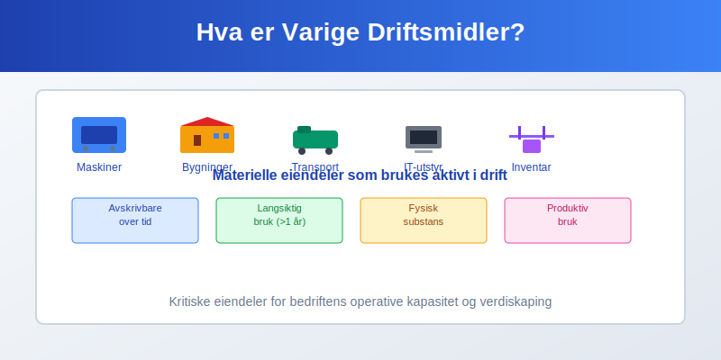
Definisjon og Karakteristika
Grunnleggende Definisjon
Varige driftsmidler defineres som materielle eiendeler som:
- Brukes aktivt i drift for produksjon eller levering av varer og tjenester
- Har en forventet brukstid på mer enn ett år
- Har fysisk substans - kan berøres og observeres
- Avskrives systematisk over sin økonomiske levetid
- Ikke er ment for videresalg i ordinær drift
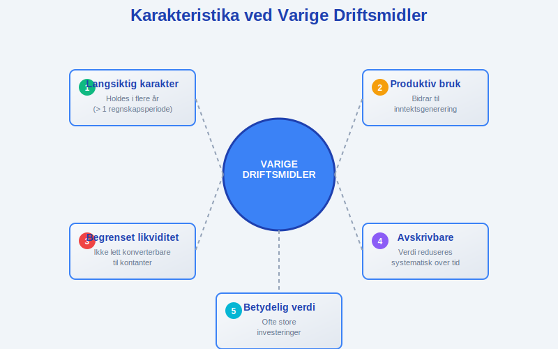
Avgrensning fra Andre Eiendeler
| Eiendeltype | Varige driftsmidler | Andre typer |
|---|---|---|
| Tomter | ✗ (ikke avskrivbare) | Anleggsmidler |
| Bygninger | ✓ | - |
| Maskiner | ✓ | - |
| Transportmidler | ✓ | - |
| Goodwill | ✗ (immateriell) | Immateriell anleggsmiddel |
| Aksjer | ✗ (finansiell) | Finansiell anleggsmiddel |
Klassifisering av Varige Driftsmidler
Produksjonsrelaterte Driftsmidler
Produksjonsrelaterte driftsmidler er direkte knyttet til produksjonsprosessen:
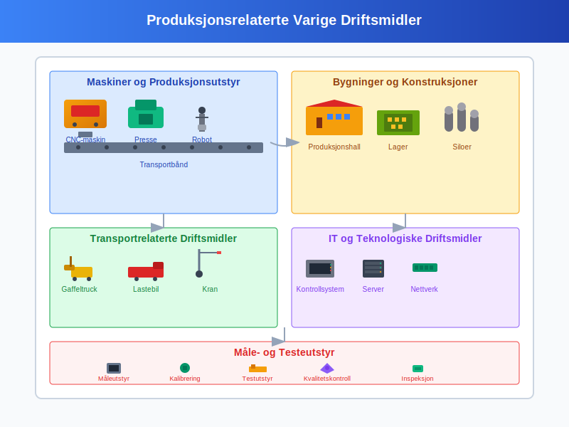
Maskiner og Produksjonsutstyr
- Produksjonsmaskiner: CNC-maskiner, presser, dreiebenker
- Prosessutstyr: Ovner, kjølesystemer, renseanlegg
- Automatiseringsustyr: Roboter, transportbånd, sorteringsanlegg
- Verktøymaskiner: Boremaskiner, sveiseutstyr, skjæremaskiner
- Måle- og testeutstyr: Kvalitetskontrollsystemer, kalibreringsutstyr
Bygninger og Konstruksjoner
- Produksjonshaller: Fabrikker, verksteder, montagehaller
- Lagerbygninger: Råmateriallager, ferdigvarelager
- Tekniske bygninger: Kraftanlegg, vannbehandlingsanlegg
- Spesialkonstruksjoner: Siloer, tanker, rørledninger
Transportrelaterte Driftsmidler
Transport er en sentral del av de fleste bedrifters drift:
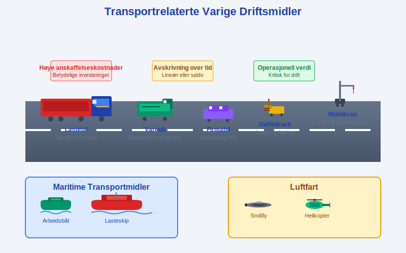
Kjøretøy og Transportmidler
- Firmabiler: Personbiler for ansatte og salg
- Lastebiler: Transport av varer og materialer
- Varebiler: Distribusjon og service
- Spesialkjøretøy: Gaffeltrucks, kraner, gravemaskiner, traktorer
Flere artikler dekker transportrelaterte regnskapsaspekter:
Maritime og Luftfart
- Fartøy: Båter, skip, ferger
- Luftfartøy: Fly, helikoptre
- Tilhengere: Semitrailere, tilhengere
- Spesialutstyr: Containere, løfteutstyr
IT og Teknologiske Driftsmidler
Moderne bedrifter er avhengige av teknologiske driftsmidler:

Datautstyr og Servere
- Servere: Fysiske servere, rackutstyr
- Nettverksutstyr: Switcher, routere, brannmurer
- Lagringssystemer: SAN, NAS, backup-systemer
- Arbeidsstasjoser: Datamaskiner, skjermer, periferutstyr
Telekommunikasjon
- Telefonsystemer: PBX-anlegg, IP-telefoner
- Kommunikasjonsutstyr: Radioutstyr, intercom-systemer
- Sikkerhetssystemer: Overvåkningskameraer, adgangskontroll
Kontorrelaterte Driftsmidler
Kontordriftsmidler støtter administrative funksjoner:
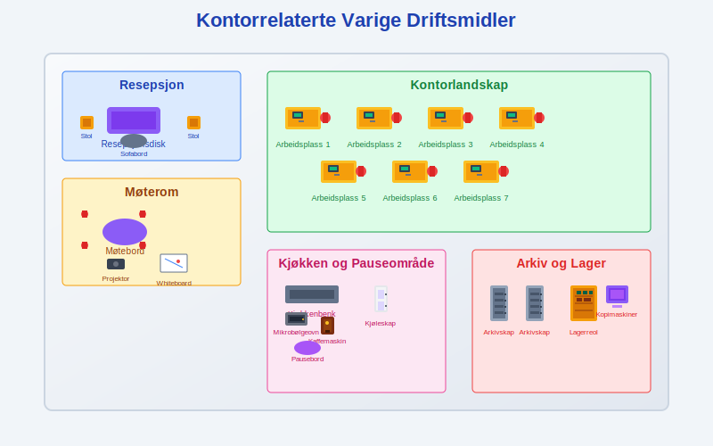
Kontormøbler og Utstyr
- Møbler: Skrivebord, stoler, møteromsmøbler
- Oppbevaringssystemer: Skap, arkivsystemer, skuffer
- Kontorutstyr: Kopimaskiner, printere, skannere
- Kjøkkenutstyr: Kjøleskap, mikrobølgeovner, kaffemaskiner
Anskaffelse og Innregning
Anskaffelseskost og Komponenter
Anskaffelseskosten for varige driftsmidler inkluderer alle nødvendige kostnader:
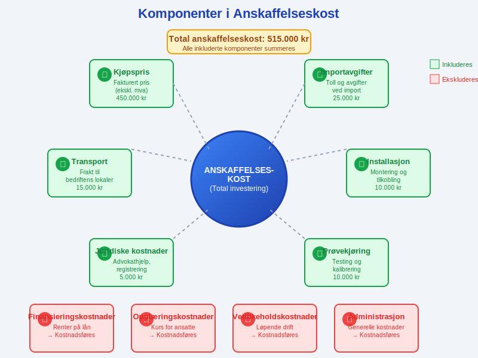
| Kostnadselement | Inkluderes | Eksempel |
|---|---|---|
| Kjøpspris | ✓ | Fakturaverdi ekskl. mva |
| Transport | ✓ | Frakt til bedriftens lokaler |
| Installasjon | ✓ | Montering og tilkobling |
| Prøvekjøring | ✓ | Testing og kalibrering |
| Opplæring av operatører | ✗ | Føres som driftskostnad |
| Finansieringskostnader | ✗ | Føres som rentekostnad |
Bagatellgrense og Direkte Kostnadsføring
I Norge gjelder bagatellgrense på 15.000 kroner:
- Under 15.000 kr: Kan kostnadsføres direkte
- Over 15.000 kr: Må aktiveres som varig driftsmiddel
- Sammenhengende anskaffelser: Vurderes samlet
Eksempel: Kjøp av 10 datamaskiner à 12.000 kr = 120.000 kr totalt. Må aktiveres som varig driftsmiddel.
Egentilvirkede Driftsmidler
For egentilvirkede varige driftsmidler:
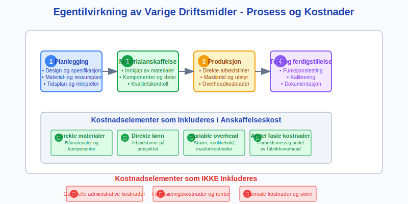
Inkluderte kostnader:
- Direkte materialkostnader
- Direkte lønn til personer som arbeider med tilvirkingen
- Variable indirekte kostnader (strøm, vedlikehold)
- Andel av faste indirekte kostnader (forholdsmessig andel av overhead)
Ekskluderte kostnader:
- Generelle administrative kostnader
- Finansieringskostnader
- Unormale kostnader (svinn, omarbeiding)
Avskrivningsmetoder
Lineær Avskrivning
Lineær avskrivning er den mest brukte metoden for varige driftsmidler:
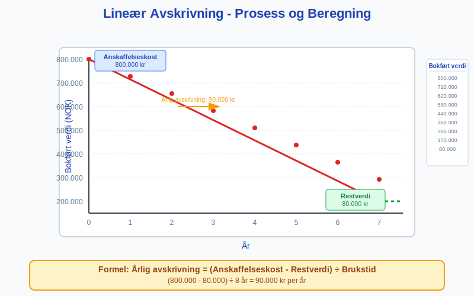
Formel: Årlig avskrivning = (Anskaffelseskost - Restverdi) ÷ Brukstid
Eksempel - Produksjonsmaskin:
- Anskaffelseskost: 800.000 kr
- Restverdi: 80.000 kr
- Brukstid: 8 år
- Årlig avskrivning: (800.000 - 80.000) ÷ 8 = 90.000 kr
Saldoavskrivning
For skatteformål brukes ofte saldoavskrivning:
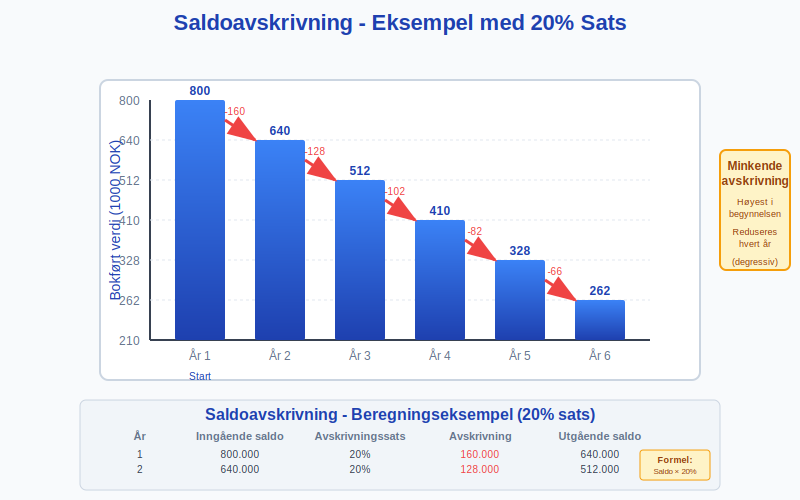
| Saldogruppe | Driftsmiddeltype | Sats |
|---|---|---|
| a | Bygninger, faste tekniske installasjoner | 4% |
| b | Personbiler, traktorer | 25% |
| c | Maskiner, redskap, instrumenter, inventar | 20% |
| d | Personbiler over 500.000 kr | 25% |
Eksempel saldoavskrivning (20% sats):
- År 1: 800.000 × 20% = 160.000 kr
- År 2: 640.000 × 20% = 128.000 kr
- År 3: 512.000 × 20% = 102.400 kr
Valg av Avskrivningsmetode
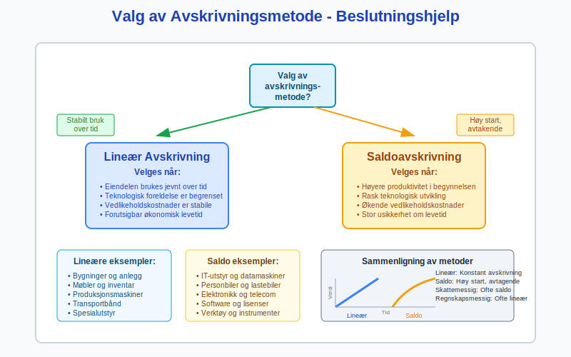
Lineær avskrivning velges når:
- Eiendelen brukes jevnt over tid
- Teknologisk foreldelse er begrenset
- Vedlikeholdskostnader er stabile
Saldoavskrivning velges når:
- Høyere produktivitet i begynnelsen
- Rask teknologisk utvikling
- Økende vedlikeholdskostnader over tid
Verdsettelse og Nedskrivninger
Løpende Verdsettelse
Varige driftsmidler verdsettes til anskaffelseskost minus akkumulerte avskrivninger:
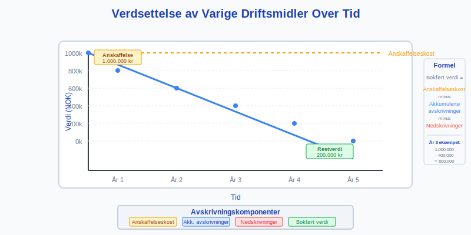
Bokført verdi = Anskaffelseskost - Akkumulerte avskrivninger - Nedskrivninger
Indikatorer på Verdifall
Eksterne indikatorer:
- Teknologiske endringer: Nye teknologier gjør eksisterende utstyr utdatert
- Markedsendringer: Redusert etterspørsel etter produkter
- Regulatoriske endringer: Nye miljøkrav eller sikkerhetsstandarder
Interne indikatorer:
- Fysisk skade: Ulykker, slitasje, korrosjon
- Driftsproblemer: Hyppige reparasjoner, redusert effektivitet
- Endret bruk: Omorganisering, nedleggelse av produksjonslinjer
Nedskrivningstesting
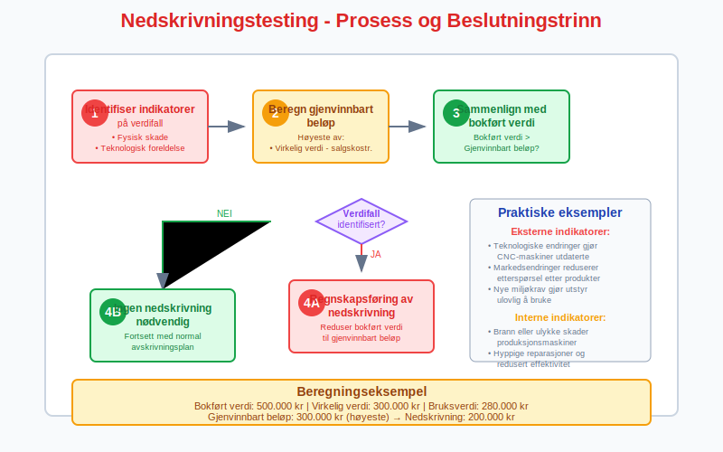
Steg 1: Identifiser indikatorer på verdifall Steg 2: Beregn gjenvinnbart beløp Steg 3: Sammenlign med bokført verdi Steg 4: Regnskapsføring av nedskrivning
Gjenvinnbart beløp = Høyeste av:
- Virkelig verdi minus salgskostnader
- Bruksverdi (nåverdi av fremtidige kontantstrømmer)
Regnskapsføring av Varige Driftsmidler
Anskaffelse
Ved kjøp av produksjonsmaskin for 500.000 kr:
Debet: Varige driftsmidler - Maskiner 500.000
Kredit: Leverandørgjeld 500.000
Månedlige Avskrivninger
Ved lineær avskrivning på 8.333 kr per måned:
Debet: Avskrivninger varige driftsmidler 8.333
Kredit: Akk. avskr. varige driftsmidler 8.333
Vedlikehold og Reparasjoner
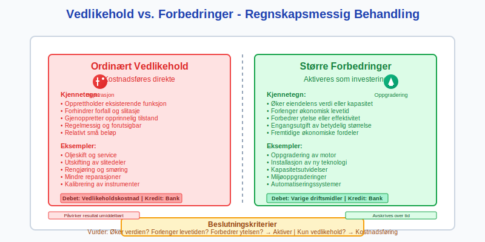
Ordinært vedlikehold kostnadsføres direkte:
Debet: Vedlikeholdskostnader 15.000
Kredit: Bank/Leverandørgjeld 15.000
Større forbedringer aktiveres:
Debet: Varige driftsmidler - Maskiner 50.000
Kredit: Bank/Leverandørgjeld 50.000
Salg og Utrangering
Ved salg med gevinst:
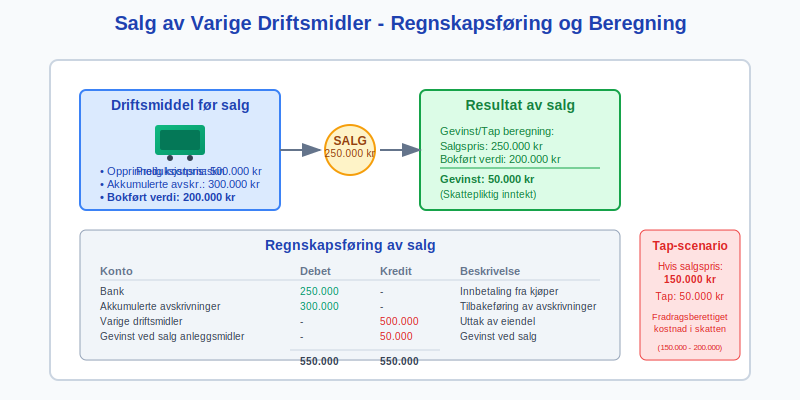
Eksempel:
- Opprinnelig kostpris: 500.000 kr
- Akkumulerte avskrivninger: 300.000 kr
- Salgspris: 250.000 kr
- Gevinst: 250.000 - (500.000 - 300.000) = 50.000 kr
Debet: Bank 250.000
Debet: Akk. avskr. varige driftsmidler 300.000
Kredit: Varige driftsmidler - Maskiner 500.000
Kredit: Gevinst ved salg anleggsmidler 50.000
Praktiske Eksempler
Produksjonsbedrift - MetallTech AS
MetallTech AS produserer metallkomponenter:
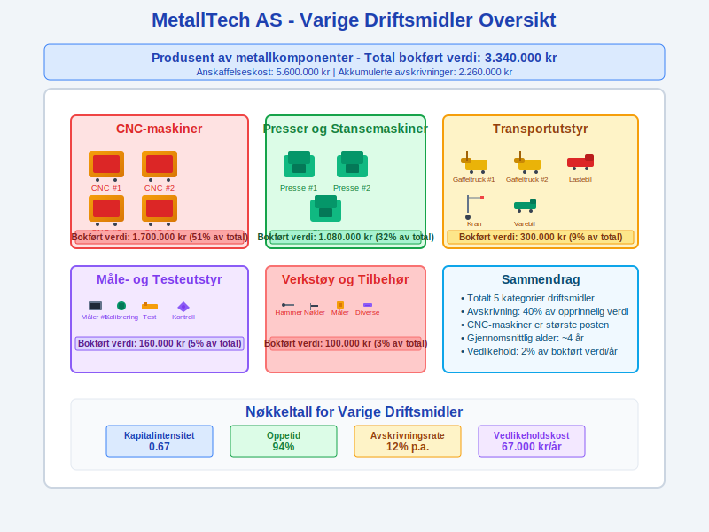
| Driftsmiddel | Anskaffelseskost | Akkum. avskr. | Bokført verdi |
|---|---|---|---|
| CNC-maskiner | 2.500.000 | 800.000 | 1.700.000 |
| Presser og stansemaskiner | 1.800.000 | 720.000 | 1.080.000 |
| Transportutstyr | 600.000 | 300.000 | 300.000 |
| Måle- og testeutstyr | 400.000 | 240.000 | 160.000 |
| Verkstøy og tilbehør | 300.000 | 200.000 | 100.000 |
| Total | 5.600.000 | 2.260.000 | 3.340.000 |
Transportselskap - LogiCorp AS
LogiCorp AS driver med varetransport:
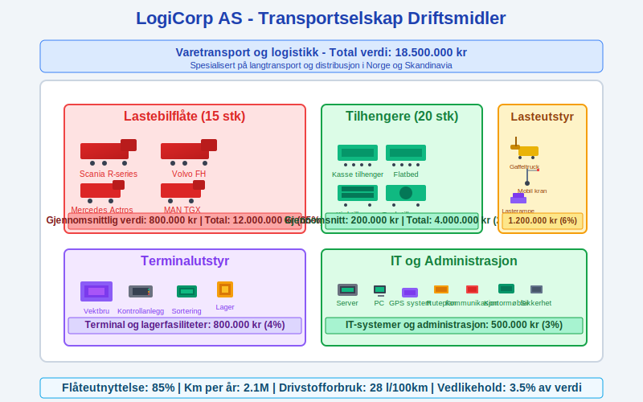
| Driftsmiddel | Antall | Gjennomsnittlig verdi | Total verdi |
|---|---|---|---|
| Lastebiler | 15 | 800.000 | 12.000.000 |
| Tilhengere | 20 | 200.000 | 4.000.000 |
| Gaffeltrucks | 8 | 150.000 | 1.200.000 |
| Terminalutstyr | - | - | 800.000 |
| IT og administrasjon | - | - | 500.000 |
| Total | 18.500.000 |
Servicebedrift - TechSupport AS
TechSupport AS leverer IT-tjenester:
| Driftsmiddel | Verdi (NOK) | Andel | Avskrivningstid |
|---|---|---|---|
| Servere og nettverksutstyr | 1.500.000 | 50% | 3-5 år |
| Arbeidsstajoner | 600.000 | 20% | 3 år |
| Kontormøbler | 400.000 | 13% | 10 år |
| Firmabiler | 300.000 | 10% | 5 år |
| Verktøy og målutstyr | 200.000 | 7% | 3-5 år |
| Total | 3.000.000 | 100% |
Skattemessige Forhold
Saldogrupper for Skatteformål
Varige driftsmidler fordeles på ulike saldogrupper:
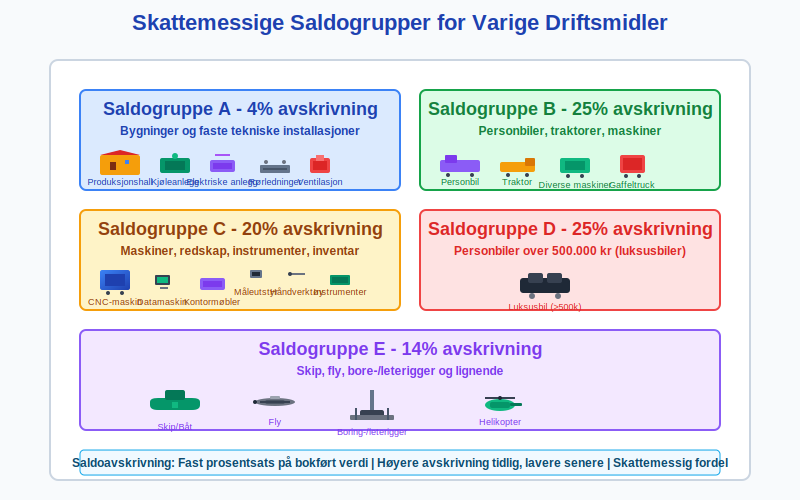
| Saldogruppe | Beskrivelse | Eksempler | Sats |
|---|---|---|---|
| a | Bygninger og faste installasjoner | Produksjonshaller, kjøleanlegg | 4% |
| b | Biler, traktorer, maskiner | Personbiler, gaffeltrucks | 25% |
| c | Maskiner, inventar, instrumenter | Produksjonsmaskiner, kontorutstyr | 20% |
| d | Personbiler over 500.000 kr | Luksusbiler | 25% |
| e | Skip, fly, bore-/leterigger | Maritime fartøy, luftfartøy | 14% |
Forskjeller Regnskap vs. Skatt
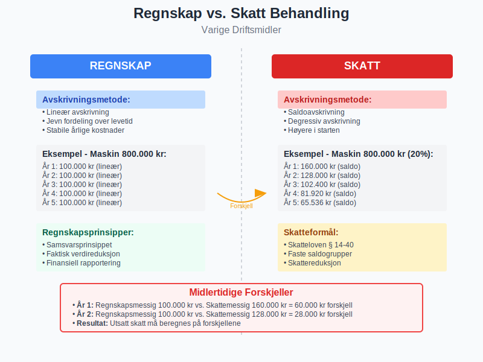
Midlertidige forskjeller oppstår når:
- Regnskapsmessig avskrivning ≠ Skattemessig avskrivning
- Nedskrivninger i regnskapet ikke aksepteres skattemessig
- Oppskrivninger behandles forskjellig
Eksempel midlertidig forskjell:
- Regnskapsmessig avskrivning: 100.000 kr (lineær)
- Skattemessig avskrivning: 120.000 kr (saldo)
- Forskjell: 20.000 kr → Utsatt skatt
Digitalisering og Moderne Utfordringer
Digitale Verktøy for Forvaltning
Moderne bedrifter bruker digitale løsninger for å forvalte varige driftsmidler:
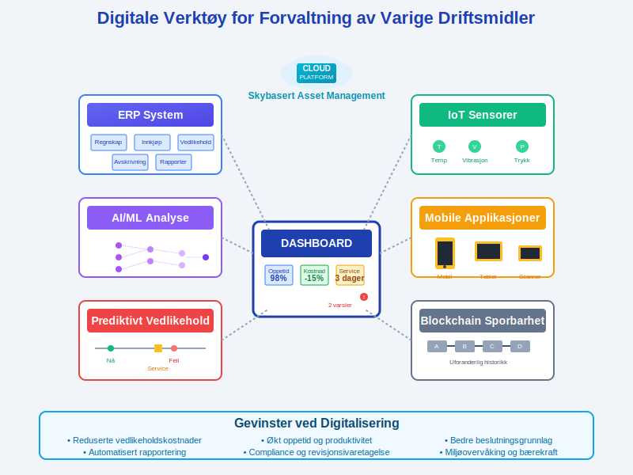
Asset Management Systemer
- ERP-integrasjon: Sømløs integrasjon med regnskapssystem
- Livssyklussporing: Fra anskaffelse til utrangering
- Vedlikeholdsplanlegging: Automatisert varsling og scheduling
- Kostnadssporing: Detaljert kostnadsoversikt per eiendel
IoT og Prediktivt Vedlikehold
- Sensorer: Kontinuerlig overvåking av driftsmidler
- Dataanalyse: Prediktive modeller for vedlikeholdsbehov
- Automatisering: Automatiske bestillinger av reservedeler
- Optimalisering: Maksimering av oppetid og levetid
Utfordringer med Teknologiske Driftsmidler
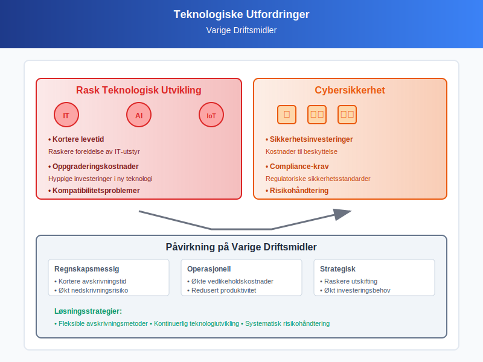
Rask teknologisk utvikling:
- Kortere levetid: Raskere foreldelse av IT-utstyr
- Oppgraderingskostnader: Hyppige investeringer i ny teknologi
- Kompatibilitetsproblemer: Integrasjon mellom gamle og nye systemer
Cybersikkerhet:
- Sikkerhetsinvesteringer: Kostnader til beskyttelse
- Compliance-krav: Regulatoriske sikkerhetsstandarder
- Risikohåndtering: Forsikring mot cyberangrep
Beste Praksis og Anbefalinger
Strategisk Planlegging
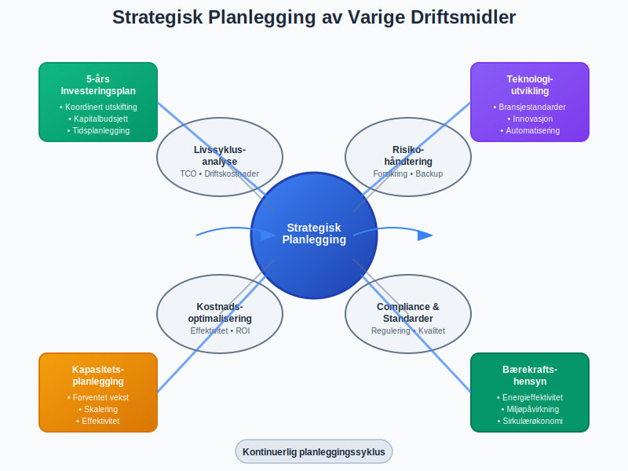
Langsiktig Kapitalbudsjett
- 5-års investeringsplan: Koordinert utskifting av driftsmidler
- Teknologiutvikling: Følg med på bransjestandarder
- Kapasitetsplanlegging: Balancer kapasitet med forventet vekst
- Bærekraftshensyn: Energieffektivitet og miljøpåvirkning
Livssyklusanalyse
- Total Cost of Ownership (TCO): Inkluder alle kostnader over levetiden
- Driftskostnader: Energi, vedlikehold, reservedeler
- Resirkuleringsverdi: Verdi ved utrangering
- Alternativkostnader: Sammenlign med leasing og outsourcing
Operasjonell Forvaltning
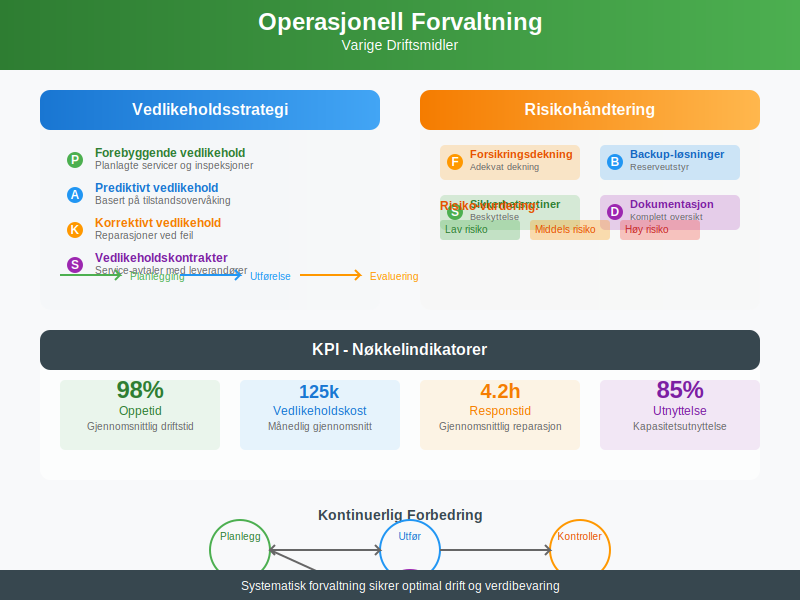
Vedlikeholdsstrategi
- Forebyggende vedlikehold: Planlagte servicer og inspeksjoner
- Prediktivt vedlikehold: Basert på tilstandsovervåking
- Korrektivt vedlikehold: Reparasjoner ved feil
- Vedlikeholdskontrakter: Service-avtaler med leverandører
Risikohåndtering
- Forsikringsdekning: Adekvat dekning mot skader og utfall
- Backup-løsninger: Reserveutstyr og alternative prosesser
- Sikkerhetsrutiner: Beskyttelse mot tyveri og sabotasje
- Dokumentasjon: Komplett dokumentasjon av alle driftsmidler
Regnskapsmessig Oppfølging
Månedlige Rutiner
- Avskrivningsberegninger: Kontroller automatiske beregninger
- Verdifall-indikatorer: Løpende vurdering av verdireduksjon
- Nedskrivning: Bokføring av nedskrivning på Konto 6050 - Nedskrivning av varige driftsmidler
- Vedlikeholdskostnader: Klassifisering av kostnader vs. investeringer
- Forsikringsoppgjør: Oppfølging av skadeerstatninger
Kvartalsvise Rutiner
- Nedskrivningstesting: Gjennomgang av verdifall-indikatorer
- Budsjettoppfølging: Sammenligning faktiske vs. budsjetterte investeringer
- Effektivitetsanalyse: Vurdering av driftsmidlenes produktivitet
- Saldogruppeinnmelding: Korrekt rapportering til skattemyndighetene
Årlige Rutiner
- Fysisk inventering: Telling og kontroll av alle driftsmidler
- Verdsettelsesgjennomgang: Full gjennomgang av alle verdsettelser
- Avskrivningsmetode-evaluering: Vurdering av metoder og forutsetninger
- Strategisk gjennomgang: Evaluering av driftsmiddelstrategien
Sammenheng med Andre Regnskapselementer
Påvirkning på Finansielle Rapporter
Varige driftsmidler påvirker alle hovedregnskapene:

Balansen
- Anleggsmidler: Bokført verdi av alle varige driftsmidler
- Akkumulerte avskrivninger: Motpost som reduserer bokført verdi
- Totalkapital: Betydelig påvirkning på bedriftens størrelse
Resultatregnskapet
- Avskrivninger: Årlig kostnad som reduserer resultat
- Vedlikeholdskostnader: Løpende driftskostnader
- Gevinst/tap ved salg: Påvirkning på årets resultat
Kontantstrømoppstillingen
- Investeringsaktiviteter: Kjøp og salg av driftsmidler
- Avskrivninger: Adderes tilbake da de ikke påvirker kontantstrøm
Nøkkeltall og Analyse
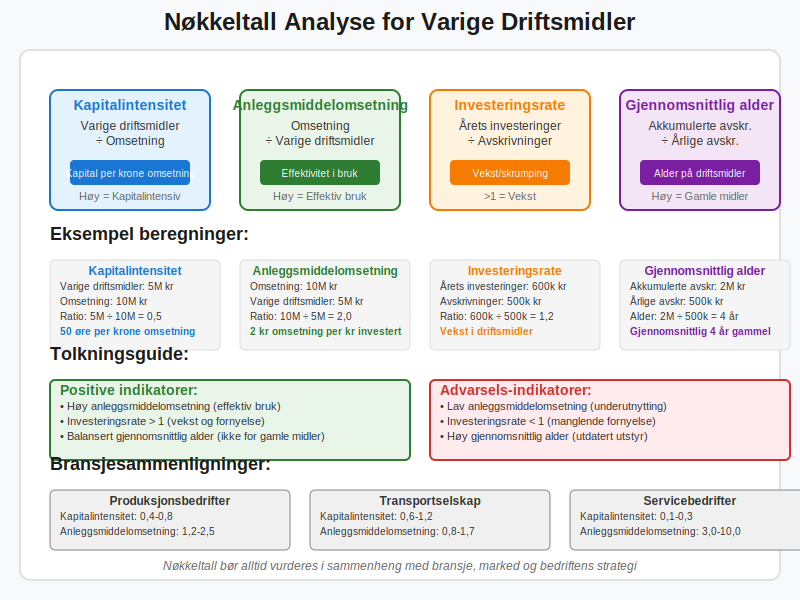
| Nøkkeltall | Beregning | Tolkning |
|---|---|---|
| Kapitalintensitet | Varige driftsmidler ÷ Omsetning | Hvor mye kapital trengs per krone omsetning |
| Anleggsmiddelomsetning | Omsetning ÷ Varige driftsmidler | Effektiviteten i bruk av driftsmidler |
| Investeringsrate | Årets investeringer ÷ Avskrivninger | Om bedriften vokser eller skrumper |
| Gjennomsnittlig alder | Akkumulerte avskr. ÷ Årlige avskr. | Hvor gamle driftsmidlene er |
Fremtidige Trender og Utviklinger
Teknologiske Trender
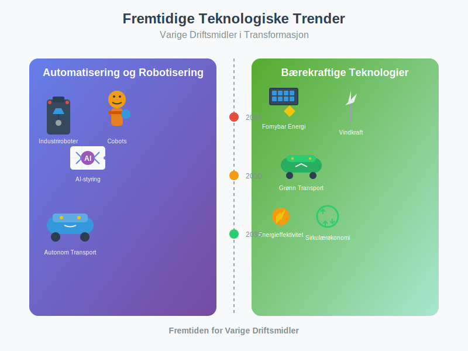
Automatisering og Robotisering
- Industriroboter: Økt bruk i produksjon
- Cobots: Samarbeid mellom mennesker og roboter
- AI-styring: Intelligente produksjonssystemer
- Autonom transport: Selvkjørende lastebiler og gaffeltrucks
Bærekraftige Teknologier
- Energieffektivitet: Krav til lavere energiforbruk
- Fornybar energi: Solcellepaneler, vindkraft på bedriftene
- Sirkulærøkonomi: Design for gjenbruk og resirkulering
- Grønn transport: Elektriske kjøretøy og hydrogenbiler
Regnskapsmessige Utviklinger
Nye Regnskapsstandarder
- IFRS 16 Leieavtaler: Påvirkning på leasing av driftsmidler
- ESG-rapportering: Miljø-, sosial- og styringsrapportering
- Bærekraftsregnskaper: Integrert rapportering av bærekraft
Digitalisering av Regnskap
- Automatisk gjenkjenning: AI som klassifiserer driftsmidler
- Sanntidsrapportering: Kontinuerlig oppdatering av verdsettelser
- Blockchain: Sporbarhet og verifikasjon av eiendeler
Konklusjon
Varige driftsmidler representerer ofte den største enkeltposten i bedrifters anleggsmidler og er kritiske for operasjonell evne og konkurransekraft. Korrekt håndtering av disse eiendelene krever:
Strategisk perspektiv:
- Langsiktig planlegging: Koordinert utskifting og oppgradering
- Teknologiutvikling: Følge med på bransjestandarder
- Bærekraftsfokus: Miljøhensyn i investeringsbeslutninger
Operasjonell eksellens:
- Systematisk vedlikehold: Maksimering av levetid og oppetid
- Effektiv forvaltning: Optimal bruk av tilgjengelige ressurser
- Risikohåndtering: Beskyttelse mot tap og skader
Regnskapsmessig presisjon:
- Korrekt klassifisering: Skille mellom kostnader og investeringer
- Systematiske avskrivninger: Gjenspeile faktisk verdireduksjon
- Løpende vurderinger: Identifisere og håndtere verdifall
For moderne bedrifter blir digitaliseringen av driftsmiddelforvaltningen stadig viktigere, med IoT-sensorer, prediktivt vedlikehold og AI-basert optimalisering som nye standarder. Samtidig øker fokuset på bærekraft kravene til energieffektivitet og miljøpåvirkning.
Ved å følge etablerte prinsipper for regnskapsføring, verdsettelse og forvaltning kan bedrifter sikre at deres varige driftsmidler bidrar optimalt til verdiskaping og langsiktig suksess. For mer informasjon om relaterte emner, se våre artikler om avskrivningsmetoder, anskaffelseskostnader og balansen.